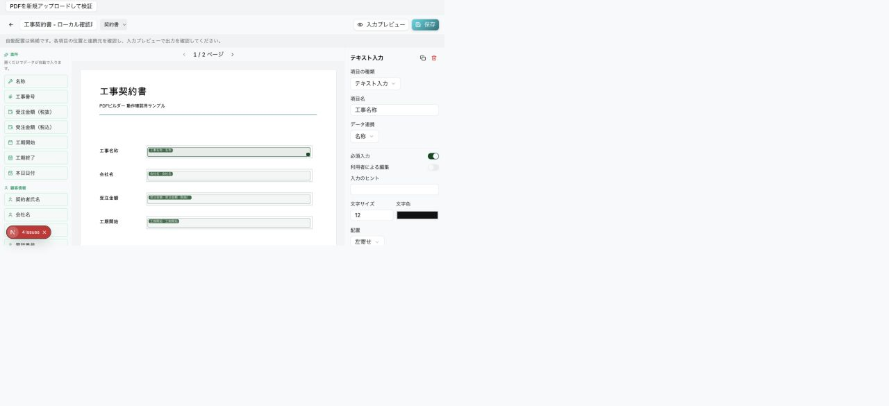
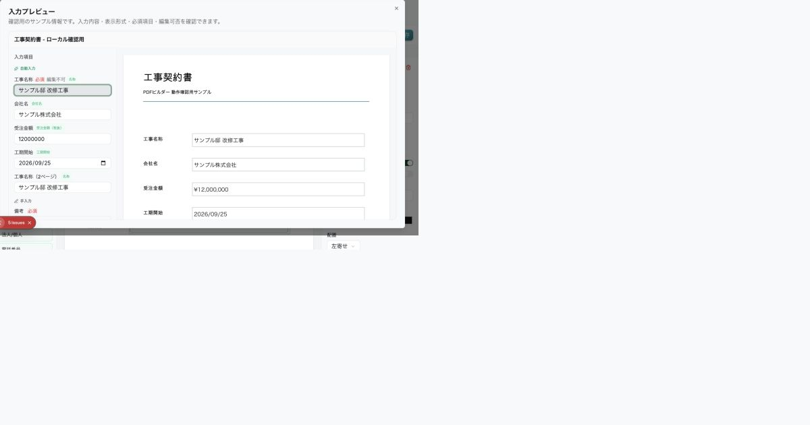

目次を開く
ログインと画面の見方
主な利用者：すべての利用者
自分の会社の画面を開き、今日やることを確認します。

会社専用URLを開く
管理者から案内された会社専用URLにアクセスします。HACHIの入口は hachi.bridge-linq.com です。bridge-linq.com と会社専用URLは入口が異なります。
自分のアカウントでログイン
招待されたメールアドレスとパスワードを入力します。Googleログインは連携済みのアカウントで使用します。共有の検証用アカウントを通常業務で使わないでください。
左のメニューで移動
ダッシュボード／リード／生産／ポータルの分類から、使いたい画面を選びます。折りたたまれている場合は分類を開いて項目を選びます。
今日の仕事を確認
ダッシュボードの予定・ToDo・承認待ちを確認します。表示設定や配置変更で、自分に必要な情報を見やすくできます。
表示されるメニューは役割と会社の権限設定で変わります。見えない機能は管理者に確認してください。
うまくいかないとき・確認すること
ログインできない場合は、会社専用URL・メールの前後の空白・パスワードを確認します。「パスワードを忘れた場合」から再設定し、招待先と所属会社も管理者に確認してください。
原本の参照：業務フロー① No.1–12／最終確認 No.2–12
次へ：検索・通知・基本操作を使う →検索・通知・基本操作を使う
主な利用者：すべての利用者
どの画面でも共通する探し方と、保存・通知の確認方法を覚えます。
検索で対象を探す
左メニューの検索から顧客名や案件名などを入力します。結果から対象を開きます。自分の所属と権限の範囲で表示されます。
通知から仕事を開く
ベルの通知一覧を開き、承認依頼や回覧などの内容を確認します。関連画面で処理を完了し、通知の既読状態も確認します。
保存した結果を確かめる
新規作成・編集では必須項目を入力して保存します。エラーが出たら該当欄を修正します。保存後は一覧や詳細を開き直して反映を確認します。削除は対象を確認してから行います。
自分の設定を整える
プロフィールから設定を開き、表示名・文字サイズ・メール署名などを必要に応じて変更します。利用を終える場合はプロフィールのメニューからログアウトします。
下書き・承認待ち・完了などの状態を見比べましょう。ボタンが押せないときは、必須入力・処理中・自分の権限を確認します。
うまくいかないとき・確認すること
他社の情報が見える、保存先が違うなどの異常に気付いた場合は操作を止め、URL・時刻・対象を管理者に連絡します。
原本の参照：グローバルUI・共通機能⑥／最終確認 No.2–12・204
次へ：問い合わせを顧客にする →問い合わせを顧客にする
主な利用者：営業・管理者
初めての問い合わせを記録し、担当者と次の対応を決めます。
問い合わせを登録
手動で氏名・連絡先・問い合わせ内容を入力します。外部フォーム等からの取り込みは、管理者が連携を設定している場合に利用できます。
内容と担当者を確認
問い合わせを開き、担当者・対応状況を確認します。AIの候補が出ても、実際に対応できる担当者を選びます。
顧客化する
商談を進める相手は「顧客化」から顧客へ登録します。すでに顧客情報がある場合は、重複登録を避けて関連を確認します。
次の対応を残す
顧客詳細で商談メモ、ToDo、日程を登録します。見送りの場合は対応状況を更新します。
問い合わせの受信だけで、顧客化や商談日程がすべて自動確定するわけではありません。
うまくいかないとき・確認すること
取り込みが来ない場合は、手動登録で業務を継続し、連携先・Webhook設定を管理者に確認してください。
原本の参照：業務フロー① No.13–24／変更一覧 No.107
次へ：顧客・商談・ToDoを管理する →顧客・商談・ToDoを管理する
主な利用者：営業・管理者
連絡先・商談履歴・次の約束を1つの顧客情報にまとめます。
検索・表示を切り替える
名前などで検索します。一覧／カード／パイプラインの表示を切り替えられます。通常は一覧から始まります。
顧客情報を入力
新規顧客を登録するか、顧客詳細の記入画面で連絡先、担当者、予算感、見込度A/B/C、特需などを設定して保存します。
商談とToDoを残す
商談タブにメモを記録します。ToDoタブでは、今日の仕事・今後の仕事・すべての仕事を見比べて期限と完了状態を管理します。
日程・資料をまとめる
スケジューリングで候補日とメール文面を確認します。確定した日時を登録し、ドキュメント一覧に顧客関連の資料を保存します。
パイプラインは顧客・商談管理の中にあります。独立したパイプラインメニューを探す必要はありません。
うまくいかないとき・確認すること
AIの見込度は提案です。根拠となるメモと実際の状況を確認して採用してください。
原本の参照：業務フロー① No.19–36／変更一覧 No.1–15・45・49–53
次へ：録音・要約を商談に残す →録音・要約を商談に残す
主な利用者：営業
商談の記録を残し、内容を見返せるようにします。
顧客を選び録音を開始
記録する顧客を確認して、録音開始を押します。ブラウザーのマイク利用を許可します。
録音を停止
終了時に停止します。営業が手入力するメモも併せて残せます。
文字起こし・要約を確認
連携設定に応じて生成された内容を確認します。人名、金額、日付などの聞き間違いを修正します。
次の対応を確認
商談の履歴に残った内容を確認し、必要なToDoを追加・確認します。自動追加された場合も担当と期限を見直します。
音声認識・AI要約の方式と利用可否は運営側の設定に依存します。
うまくいかないとき・確認すること
マイクを許可しても録音できない場合は端末の入力機器を確認し、手入力メモで記録を残してください。
原本の参照：業務フロー① No.17–18／変更一覧 No.7–11
次へ：見積を作り、承認してもらう →見積を作り、承認してもらう
主な利用者：営業・承認者
顧客向けの金額と社内の原価を整理し、必要な承認を受けます。
顧客を選んで作成
新規作成で対象顧客を選びます。既存見積のコピーや参照、AIによる下書きも使えます。コピー時は顧客と案件の紐付きを確認します。
明細を入力
大項目と詳細項目に内容・数量・単位・原価・見積単価・業者を入力します。注釈はテキスト行を使用します。経営調整費・予備費の扱いを確認します。
粗利とPDFを確認
合計と粗利率を確認します。顧客向け見積書と社内用の原価内訳書を区別してください。顧客向けに原価内訳書を渡さないようにします。
保存・承認・提示
基準を下回る見積は承認申請します。差戻しなら理由を確認して修正・再申請します。承認後、内容を確認して顧客に提示します。
粗利の基準値は会社の設定です。例示の50%などを一律の基準としないでください。
うまくいかないとき・確認すること
税込／税抜、詳細行の合計、予備費行の扱いを確認します。金額を直した場合はPDFも再確認します。
原本の参照：業務フロー① No.37–70／変更一覧 No.16–20・57–72
次へ：受注して契約・工事へ引き継ぐ →受注して契約・工事へ引き継ぐ
主な利用者：営業
営業が決めた内容を、契約と現場の情報へ引き継ぎます。
- 01 · 営業商談の受注確定金額・見積を確認
- 02 · 営業契約の確認書類作成へ
- 03 · 現場工事登録住所・工期・担当
対象商談を受注へ
対象の商談を受注ステージへ移動し、受注確定の画面を開きます。
受注内容を確認
顧客、対象見積、金額、受注日を確認します。見積が必要な場合は作成ルートへ進みます。
工事情報を補う
名称、現場住所、着工・完工予定日、担当者などを入力します。提案された工期や担当は実情に合わせて調整します。
登録後の紐付きを確認
工事登録を完了し、工事一覧と契約管理で該当案件を確認します。顧客・商談・見積との関係も確認します。
登録を途中でやめた場合は、工事まで作成されたかを確認してから再操作します。
うまくいかないとき・確認すること
契約金額の税区分と見積合計の税区分を必ず見比べます。
原本の参照：業務フロー① No.71–89／最終確認 No.85–99
次へ：契約書を作成する →契約書を作成する
主な利用者：営業・総務・承認者
登録済みの雛形から契約書を作り、社内確認を進めます。
契約と雛形を選ぶ
契約詳細を開き、「書類作成」で管理者が登録したテンプレートを選びます。
差し込み内容を確認
顧客名、名称、工事場所、工期、金額などを確認します。特記事項・約款を含め、空欄と税区分を確認します。
PDFを確認して社内承認
プレビューでページごとの配置を確認します。必要に応じて承認ワークフローへ進み、承認者が内容を確認します。
配布方法を選ぶ
承認済みのPDFを保存します。電子契約を使う場合は、管理者にCloudSignの接続・送信検証が完了しているか確認してから進めます。
電子契約は別途契約・API設定が必要です。未設定時の「スタブ送信」は実際のメール送信や署名完了を意味しません。
うまくいかないとき・確認すること
CloudSignの実送信は原本で検証不可です。PDF添付・署名・結果反映までの受入確認が必要です。
原本の参照：業務フロー① No.90–117／最終確認 No.94／変更一覧 No.24–33・123–127
次へ：PDFの雛形と差し込み項目を設定する →PDFの雛形と差し込み項目を設定する
主な利用者：管理者
会社の帳票に、どの情報をどこへ入れるかを設定します。
図解：マッピングは「どの情報を、どの欄へ」の設定
案件に登録されている情報
名称：サンプル邸 改修工事
受注金額：12,000,000円
工事請負契約書
✓ 名称欄と「工事の名称」が対応しています。選択を変えると、誤った設定の例を確認できます。
操作説明用の図です。実際のアプリの設定やデータは変更しません。

PDFをアップロード
テンプレート名と帳票の種類を設定し、元になるPDFを選びます。文字の入る欄、ページ数、向きを確認します。
項目の位置を決める
候補の項目を確認し、PDF上の入力欄に配置します。判別できない項目は手動で位置を指定します。文字列・数値・日付・チェックなどの型を合わせます。
差し込む情報を選ぶ
「名称」には工事の名称、「金額」には対応する金額を割り当てます。手入力の欄は手入力として設定します。必要なら必須・編集可否・文字サイズを調整します。
プレビューして保存
長い名称、0円、複数ページなどで確認します。保存して開き直し、実際の契約の「書類作成」からも同じ帳票を確認します。PDFを差し替えた場合は背景も更新されたか見比べます。

マッピングは「情報」と「紙面の位置」の対応付けです。どんなPDFでも無確認で完全自動になる仕様ではありません。自動候補を確認し、曖昧な欄を手動設定します。
うまくいかないとき・確認すること
原本の最終確認 No.106はNG：PDF差し替え後に旧プレビューが残るとの記録です。この資料作成では解消判定していません。利用前に新しいPDFが表示・出力されるか確認してください。
原本の参照：業務フロー① No.117／最終確認 No.106・185
次へ：工程表と日報を記録する →工程表と日報を記録する
主な利用者：現場担当・管理者
いつ・誰が・何を行うかを決め、日々の実績を残します。
工事の基本情報を確認
顧客、現場、工期、担当、関連する契約・見積を確認します。対象の工事を間違えないように名称を見比べます。
工程を追加
工程表で工程名、開始・終了日、担当業者、先行工程を設定します。日／週／月の表示を切り替えて全体の重なりを確認します。
期間と進捗を更新
工程のバーを操作するか編集画面を開いて、期間・進捗・状態を更新します。先行工程との前後関係も確認します。
日報を追加
「日報を追加」から日付、天候、作業内容、人数、課題を記録します。現場写真などはドキュメントへ保存します。
工程表から日報を開いても、工程の値がすべて日報へコピーされるわけではありません。内容を確認して入力します。
うまくいかないとき・確認すること
現場写真を探す場合は工事のドキュメントと文書管理の工事フィルターを確認します。
原本の参照：工事フロー② No.1–18／最終確認 No.100–109／変更一覧 No.147–148
次へ：追加変更と工事台帳を管理する →追加変更と工事台帳を管理する
主な利用者：現場担当・承認者
追加工事による差額と、業者ごとの予算・原価を把握します。
変更前後を準備
見積の改訂版を作成します。「追加変更」で変更前と変更後の見積を選び、追加・削除と差額を確認します。
変更内容を承認へ
変更の理由と金額を確認し、必要な承認を申請します。顧客との合意記録も保存します。
台帳に予算を入力
工事台帳で業者、工種、実行予算、勘定科目などを入力します。「参照」から見積や追加変更の内容を取得できます。
残額と保存状態を確認
発注額・請求額と予算残、粗利を確認して保存します。再参照や一括発注の前に、既存行と重複しないか確認します。
台帳上の金額と銀行への送金処理は別です。台帳入力だけで支払いは実行されません。
うまくいかないとき・確認すること
赤字や予算超過の表示が出た場合は、数量・金額・参照元を確認し、承認者に相談します。
原本の参照：工事フロー② No.19–42／最終確認 No.110–118
次へ：業者を登録し、発注する →業者を登録し、発注する
主な利用者：営業・現場担当・承認者
業者への発注内容と、相手の受領状況を記録します。
業者情報を整える
職人管理で名称・連絡先・専門分野などを登録します。請求書の受領方法、口座情報、受取人名カナは支払い担当と確認します。
発注書を作る
工事の発注書・請書から業者を選び、工事内容・明細・金額・支払条件を入力します。見積や台帳から取得した場合も内容を確認します。
社内承認を取る
承認申請を行い、結果を確認します。差戻しなら修正後に再申請します。
請書の受領を確認
業者向けURLで発注内容の確認・受領を依頼します。紙で受領する場合は紙の確認後に受領済みとして記録します。
外部協力業者は専用URLで操作します。社内用アカウントの発行とは別の流れです。
うまくいかないとき・確認すること
請書未受領や口座未登録の案件は、次工程へ進める前に担当者へ確認してください。CloudSign発注書PDF添付は原本で未実装と記録されています。
原本の参照：最終確認 No.119–125・149–154／変更一覧 No.21–23・108
次へ：納品・請求を確認して支払いを確定する →納品・請求を確認して支払いを確定する
主な利用者：現場担当・総務／経理
届いた仕事や物品と請求書を照合し、支払い対象を確定します。
- 01 · 現場納品検収納品日・内容
- 02 · 業者／現場請求書の提出URLまたは紙
- 03 · 担当者内容確認PDFと金額
- 04 · 総務／経理支払い確定帳票の対象へ
発注を探して納品検収
案件・業者・状態で対象を絞ります。「納品検収」で納品日、内容、添付を入力して確認します。現在の画面は納品と検収をまとめた操作です。
請求書を受領
メール方式では業者に案内URLを送ります。業者はメールの確認コードで認証して請求書を送信します。紙方式は社内で受領したPDFを添付します。
PDFと金額を照合
表示された請求書と入力金額、消費税、納品日を照合します。変更がある場合は確認操作を行い、担当者確認を完了します。
総務／経理が支払い確定
権限のある担当者が内容を再確認して「支払い確定」を押します。不備は差戻し、修正されるまで支払い対象に含めません。
「支払い確定」は社内の承認状態です。銀行での振込実行まで完了した意味ではありません。
うまくいかないとき・確認すること
帳票に出ない場合は、担当者確認・経理承認・納品日による対象月を確認します。分納は変更一覧で削除対象です。
原本の参照：最終確認 No.126–140／変更一覧 No.117–122・129–135
次へ：全銀データ・CSVを出力する →全銀データ・CSVを出力する
主な利用者：総務／経理・管理者
承認済みの請求から、振込準備や会計連携に使うデータを作ります。
対象月と請求を確認
対象月を選びます。納品日を基準に、支払い確定した請求が対象になります。金額・業者・部門を確認します。
全銀を準備
全銀フォーマットタブで業者ごとの合算額、口座、受取人名カナ、手数料を確認します。振込指定日・依頼人情報を設定します。
データを書き出す
全銀ファイルを保存し、銀行サービス側で取り込み・内容確認を行います。最終的な振込実行は銀行側の手順に従います。
CSVを出す場合
CSVタブで必要な出力列を選びます。こちらは請求ごとに1行です。会計ソフトへの取り込み形式と照合して保存します。
同じ業者の請求が複数あるとき、全銀の業者集計とCSVの請求単位では行数が違います。
うまくいかないとき・確認すること
口座や依頼人情報が不足している場合は、職人管理または会社設定を修正してから再出力します。
原本の参照：お金の管理③／最終確認 No.141–148・203／変更一覧 No.109–116・135
次へ：売上・利益・決算書を確認する →売上・利益・決算書を確認する
主な利用者：経営層・管理者
年度・部門ごとの状況と、確定した会計情報を見比べます。
年度と表示単位を選ぶ
対象年度を選び、売上・粗利額・営業利益・昨対比を確認します。金額の単位と速報値／確定値の表示を確認します。
部門から案件へ
部門の数値を選ぶと対象案件を確認できます。顧客名の表示は権限によって制限されます。
期首の前提を設定
期首設定で売上目標、間接費、販管費、部門・拠点目標などを設定します。見込度の割合は会社設定と合わせて確認します。
決算書を作成・確定
「決算書」から期間を選び、手入力またはファイル読み込みで損益計算書を作成します。勘定科目・集計結果を確認して確定し、BIへの反映を確認します。
見込み売上は確定売上ではありません。粗利の定義統一や確度区分の再設計には保留事項があります。
うまくいかないとき・確認すること
数値が合わないときは期間、税区分、確定状態、対象部門、見込度の割合を順に確認します。正式な会計処理は担当者の確認が必要です。
原本の参照：お金の管理③／最終確認 No.171–184／変更一覧 No.47–56・73–105
次へ：勤怠を記録・修正する →勤怠を記録・修正する
主な利用者：社員・承認者
出退勤と休暇を記録し、月の勤務実績を確認します。
対象期間を見る
勤怠画面で会社の締日に対応した期間を確認します。前後の期間へ切り替えられます。
今日の勤務を記録
通常勤務なら出勤・退勤を記録します。休暇の場合は勤務区分を選び、休暇として記録します。
日付を選んで修正
対象の日付の編集から出退勤時刻・休暇区分などを入力・修正して保存します。記録漏れは会社の運用に従って補います。
承認状態を確認
管理者は記録を確認して承認・却下します。本人は勤務日数、実労働時間、残業時間、承認状態を確認します。
休憩時間や締日などは会社設定に従います。画面を開いただけで出勤記録が付くわけではありません。
うまくいかないとき・確認すること
承認・修正できないときは、対象期間と自分の権限を管理者に確認します。
原本の参照：ポータル④／最終確認 No.159・161／変更一覧 No.145
次へ：申請して、承認・差戻しする →申請して、承認・差戻しする
主な利用者：申請者・承認者
申請内容と、誰が確認したかの履歴を残します。
申請の種類を選ぶ
新規申請で種別・テンプレートを選びます。件名、内容、必要な金額・添付などを入力します。
承認ルートを確認して申請
申請先と順番を確認して送信します。見積や契約から連携した申請も一覧で確認できます。
承認者が内容を確認
承認者は詳細と添付を開き、コメントを残して承認・条件付き承認・差戻し・却下などの表示された操作を選びます。
結果に対応
申請者は結果通知と履歴を確認します。差戻しは修正後に再申請、条件付き承認は条件を確認して対応します。
申請種別や追加項目は管理者が設定できます。会社ごとにフォーム・承認者が異なります。
うまくいかないとき・確認すること
承認待ちが続く場合は、現在の承認者と差戻し履歴を確認します。同じ申請を重複作成しないようにします。
原本の参照：業務フロー① No.57–70／最終確認 No.162／変更一覧 No.142–143
次へ：予定・回覧・チャット・文書を共有する →予定・回覧・チャット・文書を共有する
主な利用者：社員
仕事の予定や資料、社内連絡を共有します。
予定を登録
カレンダーで日／週／月を選び、予定の日時・内容・共有先を設定します。Googleカレンダーは連携済みの場合に使用できます。
回覧を読む・投稿する
回覧の本文と添付を開きます。作成者は対象者・役割を選び、必要に応じてピン留めや緊急設定を使います。
社内チャットで連絡
チャットから相手やスレッドを選び、メッセージを送ります。業務に関する決定事項は関連案件にも記録します。
文書を分類して保存
文書管理でカテゴリ、顧客、工事などを選び、ファイルをアップロードします。検索・絞り込みで探し、閲覧・ダウンロードします。
緊急回覧の未読通知と、チャットの未読通知は別です。現在のコードでは緊急回覧がBombAlertの対象です。
うまくいかないとき・確認すること
検索で見つからないときは、カテゴリや工事の絞り込みを解除します。共有範囲と権限も確認してください。
原本の参照：ポータル④／共通機能⑥／最終確認 No.163–170
次へ：メールを連携・整理する →メールを連携・整理する
主な利用者：メール利用者
連携したメールを読み、返信やフォルダ整理を行います。
アカウントを連携
利用するメールの連携設定を行い、必要なアクセスを許可します。Gmail送信とIMAP取り込みでは利用できる操作が異なります。
メールを同期・読む
同期後にスレッドを開きます。既読・スター・フラグで必要なメールを整理します。
フォルダで整理
必要なフォルダを作り、対象スレッドを移動します。フォルダや迷惑メールなどの表示を切り替えて探します。
新規作成・返信
Gmail送信の連携状態を確認し、宛先・本文・署名を見直して送信します。返信先が正しいかも確認します。
最新版コードにはフォルダ・フラグ・返信処理があります。原本の「未着手」とは差があるため、本番反映・実送信は別途確認が必要です。
うまくいかないとき・確認すること
IMAPの受信設定だけで返信できるとは限りません。現在の返信処理はGmail連携を参照します。送信先のメール到着まで確認してください。
原本の参照：最終確認 No.166–168／変更一覧 No.144
次へ：会社・メンバー・権限を設定する →会社・メンバー・権限を設定する
主な利用者：管理者
利用開始前の会社情報と、誰がどの画面を使うかを整えます。
会社情報を設定
会社名・住所・代表者・登録番号・締日・会計年度・振込元などを確認します。帳票に使われる情報なので入力後に見直します。
メンバーを招待
組織のメンバー管理から招待し、役割を割り当てます。必要なら独自ロールを追加して権限マトリクスを設定します。
マスタと業務ルールを準備
CRM・職人マスタ、勤怠の休暇区分・就業設定、ワークフローの種別や承認設定を整えます。
役割別に確認
営業・現場・総務などで表示されるメニューと操作を確認します。退職や担当変更時はアカウント・権限も更新します。
営業、現場担当、設計士、総務、経営層、管理者などの役割があります。メニューの見え方は会社設定で変わります。
うまくいかないとき・確認すること
通知設定の保存と、実際のメール・リマインダー送信は同一ではありません。必要な通知は受信まで確認します。
原本の参照：管理者⑤／最終確認 No.13–45・193／変更一覧 No.37–44
次へ：AI・外部連携を利用する →AI・外部連携を利用する
主な利用者：管理者・運営担当
Google・メール・APIなど、会社で使う連携を準備します。
使う連携を決める
Googleカレンダー、メール、アプリ通知、API／Webhook、電子契約などから業務に必要なものを選びます。
接続情報を登録
管理者が設定を行います。Googleの認可、メールの送信元認証、APIの接続先などを確認します。キーは公開資料に記載しません。
小さなデータでテスト
予定1件、社内宛の通知1通などで、送信・受信・反映まで確認します。設定保存の成功だけで接続完了と判断しません。
AI提案を確認して利用
Linqのチャットや見積・工程・要約等の支援を使います。運営側の有効化・API設定が必要です。提案内容は人が確認して採用します。
AIはOpenAI／Gemini等の設定に依存します。LINE・Slackのメッセージ取得と通知送信は別機能です。取得・クイック返信には保留事項があります。
うまくいかないとき・確認すること
APIキーの未設定・期限切れ・利用上限を管理者に確認します。費用や契約の引継ぎは「納品・維持費」を参照してください。
原本の参照：最終確認 No.185–192・206／変更一覧 No.26–27・32・34・136・146